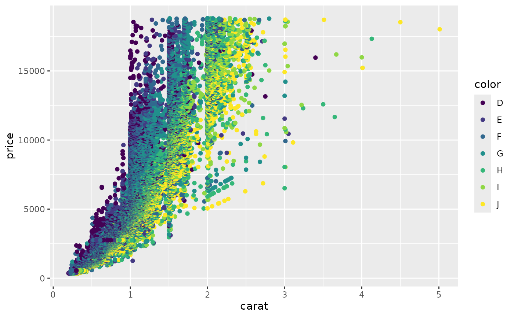

remove.packages("roogledocs")
devtools::install_local("~/Git/roogledocs",upgrade = FALSE)Initialising the library
Prior to doing any analysis we may have some form of template. This
might be a document skeleton or report template. It can contain empty
tables, place-holder images, and double-brace tags, all of which can be
replaced by calculated content from R. To do this we initialise the
roogledocs library.
# There is a global flag to disable `roogledocs` in case you want to develop and
# test offline.
options('roogledocs.disabled'=FALSE)
# roogledocs stores an authentication token on your local hard drive.
options("roogledocs.tokenDirectory"="~/.roogledocs-test")
J = roogledocs::JavaApi$get(logLevel = "DEBUG")
## 2024-01-17 15:16:30,938 main DEBUG null null initializing configuration org.apache.logging.log4j.core.config.builder.impl.BuiltConfiguration@33723e30
## 2024-01-17 15:16:30,949 main DEBUG PluginManager 'Core' found 127 plugins
## 2024-01-17 15:16:30,949 main DEBUG PluginManager 'Level' found 0 plugins
## 2024-01-17 15:16:30,954 main DEBUG PluginManager 'Lookup' found 16 plugins
## 2024-01-17 15:16:30,955 main DEBUG Building Plugin[name=AppenderRef, class=org.apache.logging.log4j.core.config.AppenderRef].
## 2024-01-17 15:16:30,962 main DEBUG PluginManager 'TypeConverter' found 26 plugins
## 2024-01-17 15:16:30,966 main DEBUG createAppenderRef(ref="Console", level="null", Filter=null)
## 2024-01-17 15:16:30,966 main DEBUG Building Plugin[name=root, class=org.apache.logging.log4j.core.config.LoggerConfig$RootLogger].
## 2024-01-17 15:16:30,970 main DEBUG LoggerConfig$RootLogger$Builder(additivity="null", level="DEBUG", levelAndRefs="null", includeLocation="null", ={Console}, ={}, Configuration(DefaultLogger), Filter=null)
## 2024-01-17 15:16:30,971 main DEBUG Building Plugin[name=loggers, class=org.apache.logging.log4j.core.config.LoggersPlugin].
## 2024-01-17 15:16:30,971 main DEBUG createLoggers(={root})
## 2024-01-17 15:16:30,971 main DEBUG Building Plugin[name=layout, class=org.apache.logging.log4j.core.layout.PatternLayout].
## 2024-01-17 15:16:30,973 main DEBUG PatternLayout$Builder(pattern="%m%n", PatternSelector=null, Configuration(DefaultLogger), Replace=null, charset="null", alwaysWriteExceptions="null", disableAnsi="null", noConsoleNoAnsi="null", header="null", footer="null")
## 2024-01-17 15:16:30,974 main DEBUG PluginManager 'Converter' found 45 plugins
## 2024-01-17 15:16:30,980 main DEBUG Building Plugin[name=appender, class=org.apache.logging.log4j.core.appender.ConsoleAppender].
## 2024-01-17 15:16:30,984 main DEBUG ConsoleAppender$Builder(target="SYSTEM_OUT", follow="null", direct="null", bufferedIo="null", bufferSize="null", immediateFlush="null", ignoreExceptions="null", PatternLayout(%m%n), name="Console", Configuration(DefaultLogger), Filter=null, ={})
## 2024-01-17 15:16:30,986 main DEBUG Starting OutputStreamManager SYSTEM_OUT.false.false
## 2024-01-17 15:16:30,986 main DEBUG Building Plugin[name=appenders, class=org.apache.logging.log4j.core.config.AppendersPlugin].
## 2024-01-17 15:16:30,986 main DEBUG createAppenders(={Console})
## 2024-01-17 15:16:30,986 main DEBUG Configuration org.apache.logging.log4j.core.config.builder.impl.BuiltConfiguration@33723e30 initialized
## WARNING: sun.reflect.Reflection.getCallerClass is not supported. This will impact performance.
## 2024-01-17 15:16:30,988 main DEBUG PluginManager 'Lookup' found 16 plugins
## 2024-01-17 15:16:30,989 main DEBUG PluginManager 'Lookup' found 16 plugins
## 2024-01-17 15:16:30,989 main DEBUG PluginManager 'Converter' found 45 plugins
## 2024-01-17 15:16:30,994 main DEBUG Starting OutputStreamManager SYSTEM_OUT.false.false-1
## 2024-01-17 15:16:30,994 main DEBUG Starting LoggerContext[name=Default, org.apache.logging.log4j.core.LoggerContext@402e37bc] with configuration org.apache.logging.log4j.core.config.builder.impl.BuiltConfiguration@33723e30...
## 2024-01-17 15:16:30,995 main DEBUG Shutdown hook enabled. Registering a new one.
## 2024-01-17 15:16:30,998 main DEBUG Starting configuration org.apache.logging.log4j.core.config.builder.impl.BuiltConfiguration@33723e30
## 2024-01-17 15:16:30,998 main DEBUG Started configuration org.apache.logging.log4j.core.config.builder.impl.BuiltConfiguration@33723e30 OK.
## 2024-01-17 15:16:30,998 main DEBUG Shutting down OutputStreamManager SYSTEM_OUT.false.false-1
## 2024-01-17 15:16:30,998 main DEBUG OutputStream closed
## 2024-01-17 15:16:30,999 main DEBUG Shut down OutputStreamManager SYSTEM_OUT.false.false-1, all resources released: true
## 2024-01-17 15:16:30,999 main DEBUG Appender DefaultConsole-1 stopped with status true
## 2024-01-17 15:16:30,999 main DEBUG Stopped org.apache.logging.log4j.core.config.DefaultConfiguration@14ec4505 OK
## 2024-01-17 15:16:31,057 main DEBUG org.apache.logging.log4j.core.util.SystemClock does not support precise timestamps.
## 2024-01-17 15:16:31,057 main DEBUG LoggerContext[name=Default, org.apache.logging.log4j.core.LoggerContext@402e37bc] started OK with configuration org.apache.logging.log4j.core.config.builder.impl.BuiltConfiguration@33723e30.
## Adding to classpath:
## /tmp/RtmpYHFHtI/temp_libpath12be77aabe594/roogledocs/java/roogledocs-0.3.0-jar-with-dependencies.jar
## Initialised roogledocs
## R package version: 0.3.0
## R package generated: 2024-01-17T13:26:56.091248658
## Java library version: io.github.terminological:roogledocs:0.3.0
## Java library compiled: 2024-01-17T15:16:04.153
## Contact: rob.challen@bristol.ac.uk
x = J$RoogleDocs$new()
## Initialising RoogleDocs. Local token directory: /home/vp22681/.roogledocs-testMost of the time you will be creating or updating a single document.
For this vignettes sake it is useful to be able to delete previous
versions. The point of roogledocs though is actually to
work with a continuously updated document and therefore deleting
documents is usually not what you want to do. Likewise for this vignette
it is useful to get a copy of the Google doc as a PDF from R. This may
not be that useful in real life. The main function here though is the
findOrCloneTemplate() method which lets you find a Google
doc by name, or clone a template document if you can’t find it. There
are also equivalent methods to find or create blank documents, or just
find Google docs by name or sharing URL if they already exist.
roogledocs::delete_document("roogledocs-demo",areYouSure = TRUE)
## Deleting file: roogledocs-demoSometimes (particularly if the roogledocs library has
been updated) we get a TokenResponseException, saying the
token has been expired or revoked. In this event explicitly
re-authenticating the library can be done though a call to
roogledocs::reauth().
roogledocs::reauth()Once authentication is working getting a
doc = roogledocs::doc_from_template("roogledocs-demo","https://docs.Google.com/document/d/1XnrBgBJFz7jEMYtw3o3YKbOuMdWvUkzIul4hb2B-SC4/edit?usp=sharing")
## Created new document with title: roogledocs-demo
fs::dir_create(here::here("docs/articles/web-only"))
doc$saveAsPdf(here::here("docs/articles/web-only/example-template-doc.pdf"))
## Created new document with title: tmp_copy_for_pdf_5cfe08cc-d7c3-4e96-9e15-24d7b116defc
## Deleting file: tmp_copy_for_pdf_5cfe08cc-d7c3-4e96-9e15-24d7b116defcRunning the chunk above should authenticate you and grab a publicly shared template I created, and make a copy of it in your Google drive under the name “roogledocs-demo”. The document template can be seen here, or as the original Google doc.
Tabular data
Inserting tables in this document is done by index. There is already
a blank table 1 in the document. At the moment we support only
huxtable tables and plain data-frames. The following chunk
creates a sample huxtable from the diamonds data set,
applies some formatting and replaces the content of table one in the
template with this data. The formatting is preserved more or less. There
is only support for basic text formatting, borders (black solid only at
present), background colour, and alignment. The table will respect
column widths as a relative measure and the command takes a overall
table width parameter. Layout will then depend on the content. Custom
row heights are not supported.
hux = diamonds %>% mutate(colorCat = ifelse(color <= "G", "D-G","G-J")) %>% group_by(cut,colorCat) %>% summarise(
`Size (mean + sd)` = sprintf("%1.2f \u00B1 %1.2f",mean(carat),sd(carat)),
`Cost (mean + sd)` = sprintf("%1.0f \u00B1 %1.0f",mean(price),sd(price))
) %>% huxtable::as_hux() %>%
huxtable::theme_article() %>%
huxtable::set_all_padding(value = 0) %>%
huxtable::merge_repeated_rows()
## `summarise()` has grouped output by 'cut'. You can override using the `.groups`
## argument.
table_1 = hux %>% roogledocs::as.long_format_table()
doc$updateTaggedTable(table_1, tableWidthInches = 4)
## Autotext replacing: {{table_1}} with table
hux| cut | colorCat | Size (mean + sd) | Cost (mean + sd) |
|---|---|---|---|
| Fair | D-G | 0.93 ± 0.43 | 3997 ± 3312 |
| G-J | 1.24 ± 0.58 | 4972 ± 3873 | |
| Good | D-G | 0.78 ± 0.39 | 3620 ± 3380 |
| G-J | 1.00 ± 0.54 | 4610 ± 4194 | |
| Very Good | D-G | 0.72 ± 0.39 | 3587 ± 3666 |
| G-J | 1.00 ± 0.54 | 4873 ± 4358 | |
| Premium | D-G | 0.79 ± 0.44 | 4060 ± 4044 |
| G-J | 1.11 ± 0.59 | 5633 ± 4732 | |
| Ideal | D-G | 0.63 ± 0.36 | 3151 ± 3562 |
| G-J | 0.88 ± 0.53 | 4233 ± 4273 |
Updating figures
A similar process exists for figures. We need to have the figure as a
PNG image on the local computer as a result of, for example, a ggplot.
Once a local PNG is available, it is temporarily uploaded to your Google
drive, added to the document and then temporary drive file deleted. In
this example we update figure 1 replacing the {{figure_1}}
tag in the original Google doc with the image:
g = ggplot(diamonds, aes(x=carat,y=price, colour=color))+geom_point()
figure_1 = roogledocs::ggplot_to_png(g, width=6, height=3)
# If the first parameter is passed as a variable and no tag is given,
# as in this example the variable name is used as the tag and the image is
# inserted into the document at the location of the tag:
doc$updateTaggedImage(figure_1)
## Uploading: file1367961967822.png; with type: image/png
## Autotext replacing: {{figure_1}} with image: https://lh3.googleusercontent.com/drive-storage/ANtge_FeBrpwxw4ONJeU0x_WMv6Rbyr6OKSlmLALSwTO8-ILFIrZ94RVJIF6azMYuxYjG4g2C3_v_PMK5m90ZRAyWjhRt5BNZo7h5OjDCiQF1g=s16383
## No requests made
## Figure figure_1 updated
## Deleting file: temp_79b0b033-d6a2-4213-b38b-a26fb19f9dd1.png
# This is equivalent to:
# doc$updateTaggedImage(figure_1, tagName = "figure_1")
g
Updating a second figure can happen in the same way, but in this case we use the alternative by specifying the index of insertion. The dimensions of the image in the Google doc should exactly match the dimensions of the PNG file saved from R. This means if you change the size of an image in R it will be changed in the document. Image dimensions are therefore important to decide on in R. If the figure or table had not already existed in the target Google doc (e.g. because you started with a blank document) they would simply have been uploaded and added at the end of the document as a sequentially numbered image. If you rearrange the order figures in the Google doc it is up to you to fix the indexes in your code. Captions are not handled here at all as it is assumed that the captions will be maintained in the Google doc and not in R (see “Updating tagged text” section later).
g2 = ggplot(diamonds, aes(x=cut,y=price, fill=cut))+
geom_violin(draw_quantiles = c(0.95,0.5,0.05))+
scale_fill_brewer()+
theme(axis.text.x = element_text(angle = 15, vjust=1,hjust=1))
filename = roogledocs::ggplot_to_png(g2, width=4, height=3)
# The figure index has to be calculated with respect to any changes that have
# already been made in the document. In this case inserting figure 1 before
# means this is inserted in the right place, but it is up to the user to make
# sure this is right.
filename %>% doc$updateFigure(figureIndex = 2)
## Uploading: file1367961dff21f.png; with type: image/png
## Figure 2 updated
## Deleting file: file1367961dff21f.png
g2
Along with updating a figure within a document as a png it is useful to also be able to keep a copy of the figure with the document in a publication ready format such as pdf. We might also be generating supplementary material / or data, and or tables in a separate word document. In my work flow all of these are generated by R scripts. Automatically uploading these documents to a folder in Google drive makes managing the output of an analysis fairly straightforward. Because Google Drive can have multiple files of the same name in the same directory the behaviour must be specified if the file already exists.
doc$uploadSupplementaryFiles(absoluteFilePath = figure_1,overwrite = TRUE)
## Uploading: file1367961967822.png; with type: image/pngUpdating tagged text
If you want to update small textual results - e.g. results in the abstract of a paper (similar to RMarkdown in-line chunks) you can place a double-brace tag into the Google doc and replace this with text generated in R. The result is inserted in the Google doc as a URL link so that further changes or updates in code can find the tagged text. Links like this can be moved around the document, or copied and pasted without losing the tag. You can get a list of the tags present in a document like this:
doc$tagsDefined()
## No requests made| tag | count |
|---|---|
| table_1_update_date | 1 |
| table_1 | 1 |
| cite:challen2019 | 1 |
| cite:challen2021 | 1 |
| references | 1 |
| cite:r6gen | 1 |
| figure_1 | 1 |
| cite:roogledocs | 1 |
| diamonds_mean_sd | 2 |
Here we have 2 tags. The tags can be then set to specific content like this:
format(Sys.Date(),"%d/%m/%Y") %>% doc$updateTaggedText(tagName = "table_1_update_date")
## Autotext replacing: {{table_1_update_date}} with 17/01/2024
## No requests made
## Text table_1_update_date updated
diamonds_mean_sd = sprintf("%1.1f \u00B1 %1.1f",mean(diamonds$price),sd(diamonds$price))
# if we don't give a specific tag name then the variable name is used:
doc$updateTaggedText(diamonds_mean_sd)
## Autotext replacing: {{diamonds_mean_sd}} with 3932.8 ± 3989.4
## No requests made
## Text diamonds_mean_sd updatedIf the tags have become broken, you may need to revert all the tags
in a document so you can easily see where the good tags are (or to
identify if some tags have been lost by copy paste). This can be done
with the doc$revertTags() function, which puts the
double-brace tags back in the document removing the auto-text. It is
possible to use this kind of approach to automatically add in captions
for figures or tables.
New content
Appending new content is also possible either as a simple styled text
string, with consistent formatting, or as a continuous block (or blocks)
with different styles, as specified in a data-frame. At the moment this
is only possible at the end of the document and is really designed if a
document is being generated completely from scratch. A minimal subset of
text formatting is supported although by using named styles you can do
more. It is not actually that hard to support more styles but at the
moment this is not the primary use case for roogledocs.
doc$appendText("\nAdding new content\n","HEADING_1")
content = tibble::tribble(
~label, ~link, ~fontName, ~fontFace,
"Roogledocs", "https://terminological.github.io/roogledocs/r-library/docs/", "Courier New", "plain",
" is also able to add text at the end of the document with complex formatting. ", NA, NA, "plain",
"Supporting fonts and font face formatting such as ", NA, NA, "plain",
"bold, ", NA, NA, "bold",
"italic ", NA, NA, "italic",
"and underlined", NA, NA, "underlined",
" amongst other things.\n\n", NA, NA, "plain"
)
doc$appendFormattedParagraph(content)
content| label | link | fontName | fontFace |
|---|---|---|---|
| Roogledocs | https://terminological.github.io/roogledocs/r-library/docs/ | Courier New | plain |
| is also able to add text at the end of the document with complex formatting. | plain | ||
| Supporting fonts and font face formatting such as | plain | ||
| bold, | bold | ||
| italic | italic | ||
| and underlined | underlined | ||
| amongst other things. |
plain |
It could be possible to combine writing new content and updating tagged text in the same script to programmatically generate replacement content. Likewise this could be used for captions of tables and figures when they are added. When you write new content you can write in double-brace tags and these can then be updated at a later stage for example.
Citations are referenced as a tag of the format
{{cite:XXXX;YYYY}} where X and Y are bibtext ids.
References will be updated if present or if not
doc$updateCitations(here::here("vignettes/web-only/test.bib"), "ieee")
## No requests made
## No requests made
## No requests madeFinally we can write out the new document to a PDF, mostly so we can
see what we have done. When we write out a document any
roogledocs links are removed:
doc$saveAsPdf(here::here("docs/articles/web-only/example-after-update.pdf"))
## Created new document with title: tmp_copy_for_pdf_78161468-d372-40ef-99a7-f3338bf7deb5
## Deleting file: tmp_copy_for_pdf_78161468-d372-40ef-99a7-f3338bf7deb5After the analysis has run we have a new version of the Google document which should look like this.
Limitations and further options
There are a lot of possible ways to extend roogledocs.
The current implementation is in evolution to meet my own needs.
- For example, additional formatting options such as text colour is not implemented but would be relatively straightforward.
- Currently there is no support for lists, which should be fairly simple, but I didn’t have a need yet.
- Absolutely positioned images are ignored completely. This is probably a good thing as it lets you have a logo within the document for example without messing up the dynamic images from R.
- Building a Google docs based drop in for the
officerlibrary for MS word could be good if it means we can leverage that interface for other uses (e.g. knitr support).